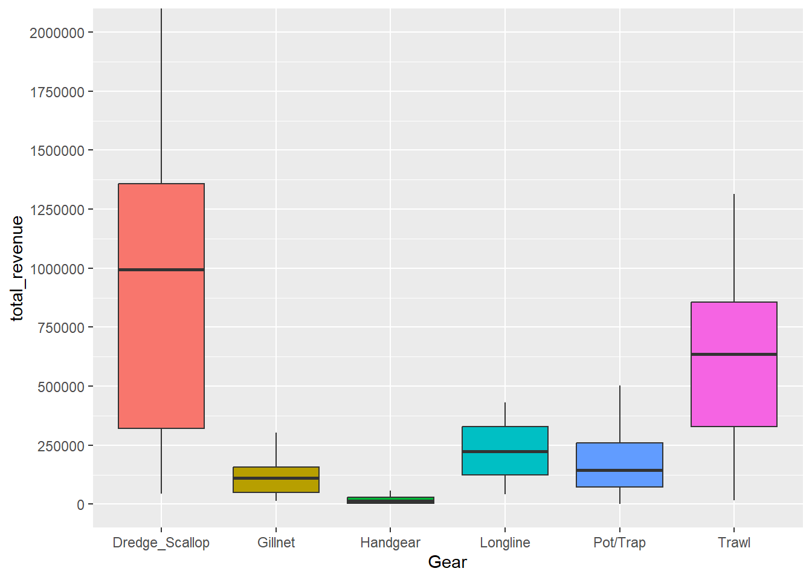
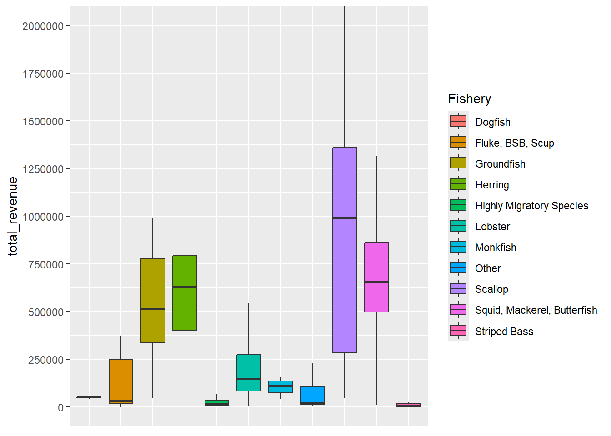
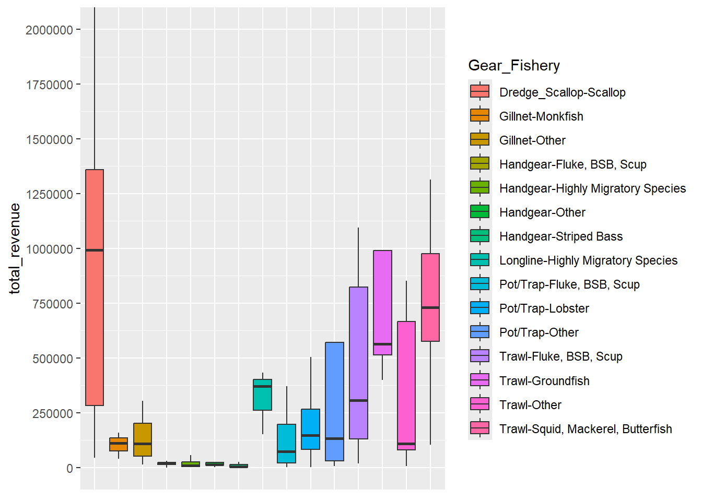

5 Revenue Summary
##
## Attaching package: 'kableExtra'## The following object is masked from 'package:dplyr':
##
## group_rows| Gear | Response | Sample | Resp_Perc | Mean | Median | St.Dev |
|---|---|---|---|---|---|---|
| Dredge_Scallop | 29 | 219 | 13 % | $ 868,517 | $ 977,446 | $ 702,022 |
| Gillnet | 10 | 89 | 11 % | $ 118,901 | $ 105,544 | $ 99,740 |
| Handgear | 59 | 356 | 17 % | $ 27,652 | $ 11,883 | $ 82,754 |
| Longline | 4 | 23 | 17 % | $ 209,393 | $ 200,590 | $ 218,211 |
| Pot/Trap | 160 | 1345 | 12 % | $ 218,852 | $ 146,016 | $ 287,046 |
| Seine | 3 | 19 | 16 % | $ 1,152,627 | $ 485,335 | $ 1,451,201 |
| Trawl | 29 | 188 | 15 % | $ 682,953 | $ 560,864 | $ 737,145 |

| Fishery | Response | Sample | Resp_Perc | Mean | Median | St.Dev |
|---|---|---|---|---|---|---|
| Dogfish | 3 | 25 | 12 % | $ 38,783 | $ 39,611 | $ 2,099 |
| Fluke, BSB, Scup | 23 | 136 | 17 % | $ 218,322 | $ 30,633 | $ 317,400 |
| Groundfish | 7 | 52 | 13 % | $ 805,092 | $ 509,954 | $ 949,835 |
| Herring | 4 | 5 | 80 % | $ 566,151 | $ 628,427 | $ 316,097 |
| Highly Migratory Species | 34 | 193 | 18 % | $ 57,812 | $ 11,674 | $ 138,027 |
| Lobster | 152 | 1272 | 12 % | $ 215,807 | $ 149,120 | $ 269,714 |
| Monkfish | 3 | 19 | 16 % | $ 97,708 | $ 103,366 | $ 63,527 |
| Other | 17 | 140 | 12 % | $ 296,188 | $ 17,370 | $ 752,970 |
| Scallop | 28 | 229 | 12 % | $ 898,935 | $ 993,348 | $ 695,170 |
| Squid, Mackerel, Butterfish | 9 | 59 | 15 % | $ 886,601 | $ 655,814 | $ 938,121 |
| Striped Bass | 12 | 66 | 18 % | $ 17,665 | $ 5,852 | $ 35,578 |

| Gear_Fishery | Response | Sample | Resp_Perc | Mean | Median | St.Dev |
|---|---|---|---|---|---|---|
| Dredge_Scallop-Scallop | 28 | 216 | 13 % | $ 898,935 | $ 993,348 | $ 695,170 |
| Gillnet-Monkfish | 3 | 19 | 16 % | $ 97,708 | $ 103,366 | $ 63,527 |
| Gillnet-Other | 7 | 70 | 10 % | $ 127,983 | $ 107,722 | $ 115,135 |
| Handgear-Fluke, BSB, Scup | 8 | 56 | 14 % | $ 22,181 | $ 18,744 | $ 15,391 |
| Handgear-Highly Migratory Species | 31 | 181 | 17 % | $ 37,666 | $ 10,439 | $ 112,796 |
| Handgear-Other | 10 | 63 | 16 % | $ 21,511 | $ 12,972 | $ 24,292 |
| Handgear-Striped Bass | 10 | 56 | 18 % | $ 7,129 | $ 3,099 | $ 8,178 |
| Longline-Highly Migratory Species | 3 | 8 | 38 % | $ 265,987 | $ 361,570 | $ 228,487 |
| Pot/Trap-Fluke, BSB, Scup | 6 | 23 | 26 % | $ 126,138 | $ 71,851 | $ 145,188 |
| Pot/Trap-Lobster | 150 | 1265 | 12 % | $ 215,997 | $ 149,120 | $ 271,294 |
| Pot/Trap-Other | 4 | 57 | 7 % | $ 464,969 | $ 128,301 | $ 760,246 |
| Trawl-Fluke, BSB, Scup | 9 | 57 | 16 % | $ 454,125 | $ 301,830 | $ 395,301 |
| Trawl-Groundfish | 5 | 41 | 12 % | $ 1,063,085 | $ 560,864 | $ 1,027,362 |
| Trawl-Other | 7 | 38 | 18 % | $ 347,505 | $ 107,355 | $ 365,575 |
| Trawl-Squid, Mackerel, Butterfish | 8 | 52 | 15 % | $ 996,320 | $ 729,249 | $ 939,135 |

By primary gear, seine vessels have the highest mean revenue, noting the presence of only three observations. Scallop dredge, trawl, and seine vessels have the highest median revenue, more than twice the value of those for other gear types. These gear types are utilized in many of the highest grossing fisheries in the Northeast region including sea scallops, squid, and groundfish (NMFS 2024). Longline has the fourth highest median values, followed by pot/trap, gillnet and handgear. For a number of gear groups, mean values greatly exceed median values, indicating skewness in the distribution to the right. This skewness indicates that vessel revenues that are far from the median within a gear group are more associated with high revenues than low revenues For scallop dredge, the distribution is slightly skewed to the left.
By FMP; scallop, squid/mackerel/butterfish, and groundfish have the highest mean vessel-level revenues- all in the $800K-$900K range. However the median value for scallop vessels is considerably higher than all other fisheries. The two highest revenue generating fisheries in the Northeast region during 2022 were lobster and scallop, though the vessel-level mean and medians highlight the differences in these fishing fleets. Median scallop vessel revenues are more than 6x lobster revenues, which is most likely driven by the number of lobster fleet vessels which is considerably more vessels than the scallop fleet.
When primary gear and FMP are combined, trawl-groundfish has the highest mean revenue per vessel, while scallop dredge-scallop has the highest median revenue. Within primary gear types, a considerable difference in revenues is found across fisheries. For example, mean and median values for lobster pot/trap vessels are roughly twice those values for fluke, black sea bass, and scup pot/trap vessels. Squid trawl vessels have more than twice the mean and median revenues than fluke, black sea bass, and scup trawl vessels.
Of note, revenues are available for all commercial fishing vessels in the Northeast region, not only for those which responded to the Cost Survey. When comparing revenues for responding vessels to the entire survey sampling frame, similar trends are apparent by fishing fleet. For example, scallop dredge, trawl, and seine vessels have the highest mean vessel-level revenues across the entire sampling frame. By fishery, squid/mackerel/butterfish, scallop, and groundfish have the highest mean vessel-level revenues. Additionally details on other sources of data are included in the Discussion chapter.